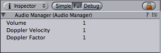

Previous
Previous
The Audio manager allows you to tweak the maximum volume of all sounds playing in the scene. To see it choose Edit -> Project Settings -> Audio.

The Audio Manager
Properties
| Property: | Function: |
|---|---|
| The volume of all sounds playing |
Details
Currently Doppler Velocity and Doppler Factor do not have any effect on ppc osx machines. This will be fixed in a future version of Unity.